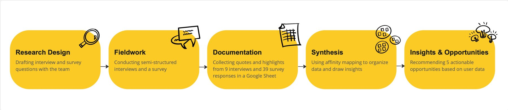
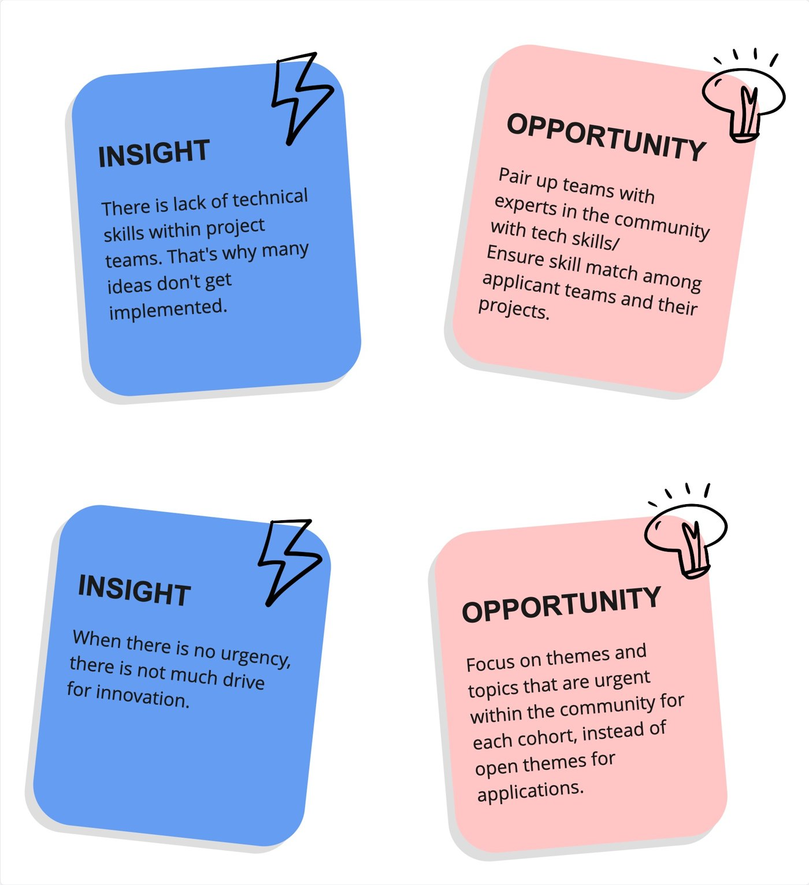

How might we design a meaningful program that sparks innovation across a fragmented, global movement?
Wikimedia's Innovation Engine team set out to redesign UNLOCK, their accelerator for free-knowledge innovation, for a movement that is anything but uniform: individual volunteers, user groups, and chapters, each facing different needs and barriers to innovating. I designed and led the exploration phase and, just as importantly, built the team's own capability to work with a user lens, deliberately centering voices from the Global South that are too often overlooked in these conversations.

I coached the team to plan and run their own user research, co-designing the interview and survey instruments and tailoring each to their distinct stakeholder groups. We ran the fieldwork together, 9 semi-structured interviews and 39 survey responses, so the skills would outlast my engagement, and I led the synthesis, affinity-mapping the raw data into insights anchored in participants' own words.
The result: five actionable insight-to-opportunity pairs that gave the team a clear, user-grounded direction for the redesign.
